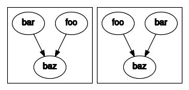

Graphing¶
In this section we will cover writing basic workflows in cylc.
The flow.cylc File Format¶
We refer to a Cylc workflow as a Cylc suite. A Cylc suite is a
directory containing a flow.cylc file. This configuration file is where
we define our workflow. The flow.cylc file uses a nested INI-based
format:
Comments start with a
#character.Settings are written as
key = valuepairs.Settings can be contained within sections.
Sections are written inside square brackets i.e.
[section-name].Sections can be nested, by adding an extra square bracket with each level, so a sub-section would be written
[[sub-section]], a sub-sub-section[[[sub-sub-section]]], and so on.
Note
Prior to Cylc 8, flow.cylc was named suite.rc,
but that name is now deprecated.
Example¶
# Comment
[section]
key = value
[[sub-section]]
another-key = another-value # Inline comment
yet-another-key = """
A
Multi-line
String
"""
Shorthand¶
Throughout this tutorial we will refer to settings in the following format:
[section]Refers to the entire section.
[section]keyRefers to a setting within the section.
[section]key=valueExpresses the value of the setting.
[section][sub-section]another-keyNote we only use one set of square brackets with nested sections.
Graph Strings¶
In Cylc we consider workflows in terms of tasks and dependencies.
Task are represented as words and dependencies as arrows (=>), so the
following text defines two tasks where make_dough is dependent on
buy_ingredients:
buy_ingredients => make_dough
In a Cylc workflow this would mean that make_dough would only run when
buy_ingredients has succeeded. These dependencies can be chained together:
buy_ingredients => make_dough => bake_bread => sell_bread
This line of text is referred to as a graph string. These graph strings can be combined to form more complex workflows:
buy_ingredients => make_dough => bake_bread => sell_bread
pre_heat_oven => bake_bread
bake_bread => clean_oven
Graph strings can also contain “and” (&) and “or” (|) operators, for
instance the following lines are equivalent to the ones just above:
buy_ingredients => make_dough
pre_heat_oven & make_dough => bake_bread => sell_bread & clean_oven
Collectively these graph strings are referred to as a graph.
Note
The order in which lines appear in the graph section doesn’t matter, for instance the following examples are the same as each other:
foo => bar
bar => baz
bar => baz
foo => bar
Cylc Graphs¶
In a Cylc suite the graph is stored under the
[scheduling][graph]R1 setting, i.e:
[scheduling]
[[graph]]
R1 = """
buy_ingredients => make_dough
pre_heat_oven & make_dough => bake_bread => sell_bread & clean_oven
"""
This is a minimal Cylc suite, in which we have defined a graph representing a workflow for Cylc to run. We have not yet provided Cylc with the scripts or binaries to run for each task. This will be covered later in the runtime tutorial.
Cylc provides a GUI for visualising graphs. It is run on the
command line using the cylc graph <path> command where the path path
is to the flow.cylc file you wish to visualise.
When run, cylc graph will display a diagram similar to the ones you have
seen so far. The number 1 which appears below each task is the
cycle point. We will explain what this means in the next section.

Hint
A graph can be drawn in multiple ways, for instance the following two examples are equivalent:
The graph drawn by cylc graph may vary slightly from one run to
another but the tasks and dependencies will always be the same.
Practical
In this practical we will create a new Cylc suite and write a graph for it to use.
Create a Cylc suite.
A Cylc suite is just a directory containing a
flow.cylcfile.If you don’t have one already, create a
cylc-rundirectory in your user space i.e.~/cylc-run
Within this directory create a new folder called
graph-introduction, which is to be our run directory. Move into it:mkdir ~/cylc-run/graph-introduction cd ~/cylc-run/graph-introductionInside this directory create a
flow.cylcfile and paste in the following text:[scheduler] allow implicit tasks = True [scheduling] [[graph]] R1 = """ # Write graph strings here! """
Write a graph.
We now have a blank Cylc suite, next we need to define a workflow.
Edit your
flow.cylcfile to add graph strings representing the following graph:Use
cylc graphto visualise the workflow.Once you have written some graph strings try using
cylc graphto display the workflow. Run the following command:cylc graph .
Note
cylc graphtakes the path to the suite as an argument. As we are inside the run directory we can runcylc graph ..If the results don’t match the diagram above try going back to the
flow.cylcfile and making changes.Tip
In the top right-hand corner of the
cylc graphwindow there is a refresh button which will reload the GUI with any changes you have made.
Solution
There are multiple correct ways to write this graph. So long as what you see in
cylc graphmatches the above diagram then you have a correct solution.Two valid examples:
a & c => b => d & f d => e
a => b => d => e c => b => f
The whole suite should look something like this:
[scheduler] allow implicit tasks = True [scheduling] [[graph]] R1 = """ a & c => b => d & f d => e """